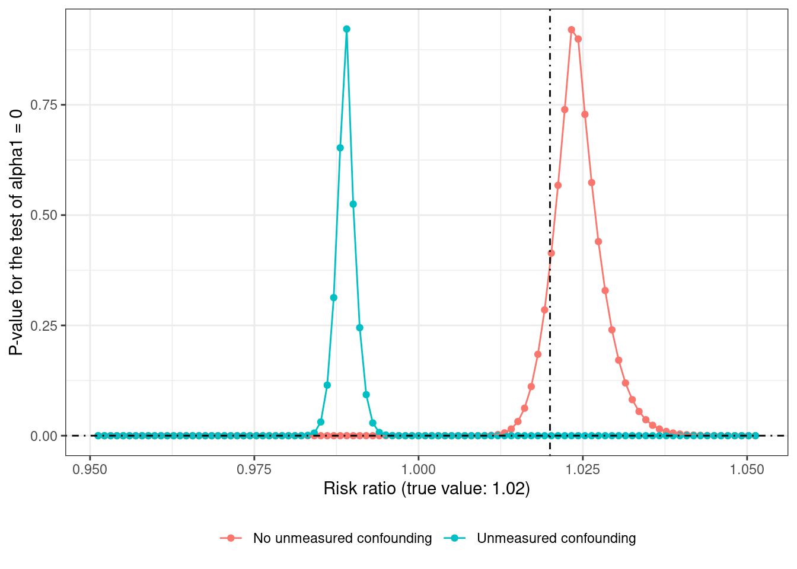

── Attaching core tidyverse packages ──────────────────────── tidyverse 2.0.0 ──
✔ dplyr 1.1.2 ✔ readr 2.1.4
✔ forcats 1.0.0 ✔ stringr 1.5.0
✔ ggplot2 3.4.2 ✔ tibble 3.2.1
✔ lubridate 1.9.2 ✔ tidyr 1.3.0
✔ purrr 1.0.1
── Conflicts ────────────────────────────────────────── tidyverse_conflicts() ──
✖ dplyr::filter() masks stats::filter()
✖ dplyr::lag() masks stats::lag()
ℹ Use the conflicted package (<http://conflicted.r-lib.org/>) to force all conflicts to become errorsIntroduction
In a previous post, I used the ratio estimator and the method of instrumental variables (IV) to estimate the effect of showing an ad on sales from a fictitious ad campaign.
This post uses the lesser-known method of g-estimation1 to estimate the effect of a continuous exposure variable in a multiplicative structural mean model (MSMM) by using the randomization indicator as an instrumental variable to obtain valid treatment effect estimates in the presence of unmeasured confounding.
1 less popular compared to IPTW and PSM, hence the clickbait-y title
As mentioned towards the end of the previous post, analyzing the treated individuals by collapsing them into a single ‘treated’ group was a simplification. The observed treatment variable would in reality be the number of impressions of the ad — naturally varying between individuals in the treated group, but zero among the individuals assigned to the control group and among the never-takers2.
2 i.e., people who would not take the treatment if assigned to the treatment group. Defiers and always-takers aren’t possible as individuals in the control group cannot see an ad, because compliance in the control arm is ensured by design.
Parameter of interest
If \(U\) indicates the (possibly multivalued) set of unmeasured confounders, \(Z\) the binary randomization variable indicating group assignment (treatment or control), \(A\) the integral exposure variable indicating observed treatment level \(a\) in \(\{0, 1, 2, … \}\), then an estimand or parameter of interest is the marginal causal risk ratio (CRR)
\[
\text{ATE} = \frac{\text{Pr}[Y^{a + 1} = 1]}{\text{Pr}[Y^{a} = 1]}
\]
This is usually the target of inference in an experiment with perfect compliance, and corresponds to setting the treatment level to \(A = a + 1\) vs \(A = a\) for the full population (\(Y^a\) denotes the potential outcome under treatment level \(a\)).
Another estimand of interest may be the average treatment effect in the treated (ATT) or the effect of the treatment on the treated (ETT). This compares the treated individuals to the counterfactual scenario had they not been treated. This corresponds to \[ \text{ATT} = \frac{\text{Pr}[Y^a = 1 | A = a]}{\text{Pr}[Y^{a = 0} = 1 | A = a]} \]
In a setting with noncompliance (possibly due to unmeasured confounding), the estimand can be further conditioned on the IV \(Z\)
\[ \text{ATT}_{IV} = \frac{\text{Pr}[Y^a = 1 | A = a, Z]}{\text{Pr}[Y^{a = 0} = 1 | A = a, Z]} \]
The main MSMM used in this post estimates the ATE if the unmeasured confounders \(U\) are not effect-measure modifiers (i.e., the impact of treatment \(A\) on the ratio scale is the same on \(Y\) at all levels of \(U\)). If \(U\) is an effect modifier, but \(Z\) is not, then the MSMM estimate can be interpreted as the \(\text{ATT}_{IV}\).
Pages 2-3 of this paper provide a concise yet illuminating discussion of the different effect measures that can be of interest.
Since risk ratios are collapsible (see this excellent paper), the (confounder-adjusted) marginal and conditional estimands are identical3.
3 which is only the case for risk differences and risk ratios.
Before writing any code, the main packages used in this post are attached.
G-estimation in a nutshell
The first time I read the chapter on g-estimation in the what-if book, it went over my head completely4. Conceptually, it seemed harder than the more popular (g-)methods of g-computation and inverse probability of treatment weighting (IPTW). However, its superiority to g-computation in terms of not being prone to bias due to extrapolation, superiority to IPTW5 in terms of having less variability (and bias), and relative ease of handling continuous exposures (and continuous instruments) piqued my curiosity6.
4 May have had something to do with the fact that I was attempting this at 3 AM in between sleep cycles.
5 I think this isn’t an issue if overlap (ATO) weights are used instead of the usual ATE weights, as g-estimation gives higher weight to strata with greater overlap, and empty strata don’t contribute to the final estimate.
6 I’m basing this on the Dukes, Vansteelandt paper.
Another advantage is that there’s no need to correctly model the relationship between the confounders \(U\) and the outcome \(Y\) for the correct estimation of the treatment effect. This would not be the case when using (log-)binomial or poisson regression, where misspecification of the \(U-Y\) relationship can bias the estimate for \(A\).
The essence of g-estimation is simple7 – once the true effect of the treatment \(\psi\) is shaved off from the response variable \(Y\), the residuals \(H(\psi) = Y - \psi A = Y^{a = 0}\) should be uncorrelated with the treatment \(A\) in the confounder-adjusted propensity model, i.e., \(\text{Cov}(A, H(\psi) | U) = 0\)8. This is the same as picking the value of \(\psi\) that leads to \(\alpha_1 = 0\) in \(\mathbb{E}[A | Y^{a=0}, U] = \alpha_0 + \alpha_1 H(\psi) + \sum_{j=2}^k \alpha_j U_{j-1}\)9. For MSMMs, \(H(\psi) = Y \text{exp}(- \psi A)\) is used where \(\psi\) is the risk ratio on the log scale.
7 after having grasped it that is
8 Cov denotes covariance.
9 For a binary exposure variable, the \(\mathbb{E}[A]\) is replaced by \(\text{logit(Pr[A = 1])}\), where \(\text{logit}(p) = \text{log}\Big(\frac{p}{1-p}\Big)\) and \(p\) is the probability \(\text{Pr}[A = 1]\).
This works because of the conditional mean independence assumption — that the exposed and unexposed individuals are exchangeable within levels of \(U\) (i.e., \(Y^{a = 0} \perp\!\!\!\perp A|U\)) as would be the case for a conditionally randomized experiment. In a marginally randomized experiment, the treatment assigned and received is independent of the potential outcomes, which would not be the case if people with (say) higher levels of \(U\) were more likely to take the treatment (\(A > 0\)) and have a positive outcome \(Y = 1\). In this scenario, it wouldn’t be possible to say whether it was \(A\) or \(U\) causing better outcomes. This lack-of-identification is due to confounding between the effect of \(U\) on \(Y\) and the effect of \(A\) on \(Y\).
Suppose the following dataset is available (with a true CRR value of 1.02, 70% treatment-control split, and 40% non-compliance (never-takers))
Code
simulate_data <- function(seed = 24, n = 1e5) {
confounder_values <- seq(0, 1e5, 50) / 1e4
set.seed(seed)
tibble(
id = 1:n,
# randomization indicator / instrument, indicates group assignment
Z = rbinom(n, 1, prob = 0.7),
# simulate continuous confounder value
U = sample(x = confounder_values, size = n, replace = TRUE),
# simulate (conditional) compliance indicator
prob_C = plogis(2 - 0.5 * U),
C = rbinom(n, 1, prob_C),
# simulate observed treatment
# potential continuous exposure value is simulated
# for each individual on [1, 100]
# but for those that have Z = 0 (control) or C = 0 (never-takers), A = 0
A = Z * C * pmin(pmax(round(rgamma(n, shape = 5, scale = 4)), 1), 100),
# response variable simulated with risk ratios specified
# baseline log probabilities
logpY0 = log(0.002) + log(1.4) * U,
# impact of treatment
logpY1 = logpY0 + log(1.02) * A,
# simulated binary responses from log-binomial model
Y = rbinom(n, 1, exp(logpY1))
)
}
df_large <- simulate_data() %>%
glimpse()Rows: 100,000
Columns: 9
$ id <int> 1, 2, 3, 4, 5, 6, 7, 8, 9, 10, 11, 12, 13, 14, 15, 16, 17, 18, …
$ Z <int> 1, 1, 0, 1, 1, 0, 1, 0, 0, 1, 1, 1, 1, 1, 1, 0, 1, 1, 1, 1, 1, …
$ U <dbl> 2.795, 5.120, 4.930, 1.090, 3.675, 7.735, 8.770, 8.085, 4.780, …
$ prob_C <dbl> 0.64622806, 0.36354746, 0.38580036, 0.81076675, 0.54053584, 0.1…
$ C <int> 1, 0, 0, 1, 1, 0, 0, 0, 1, 1, 0, 1, 0, 0, 0, 0, 1, 0, 1, 0, 1, …
$ A <dbl> 23, 0, 0, 21, 20, 0, 0, 0, 0, 24, 0, 24, 0, 0, 0, 0, 10, 0, 21,…
$ logpY0 <dbl> -5.274168, -4.491870, -4.555800, -5.847853, -4.978073, -3.61199…
$ logpY1 <dbl> -4.818708, -4.491870, -4.555800, -5.431998, -4.582020, -3.61199…
$ Y <int> 0, 0, 0, 0, 0, 0, 1, 0, 0, 0, 0, 0, 0, 0, 0, 0, 0, 0, 0, 0, 0, …For exploring g-estimation with no-unmeasured confounding (since \(U\) is measured) in the simple model represented by the directed acyclic graph (DAG) \(A \leftarrow U \rightarrow Y\) and \(A \rightarrow Y\), one way of estimating the treatment effect \(\psi\) is using grid search which visually looks like this when the estimated coefficient for \(\alpha_1\) is plotted on the Y-axis
Code
grid_search_coefficient <- seq(-1, 1, 0.05) %>%
# get the coefficient from the correct and incorrect propensity models
map_dfr(.f = ~ {
temp_df <- df_large %>%
mutate(H = Y * exp(-.x * A))
list(`No unmeasured confounding` = "A ~ H + U",
`Unmeasured confounding` = "A ~ H") %>%
map_dfc(.f = ~ {
temp_df %>%
lm(formula(.x), data = .) %>%
tidy() %>%
filter(term == "H") %>%
pull(estimate)
}) %>%
mutate(psi = .x, .before = `No unmeasured confounding`)
})
grid_search_coefficient %>%
pivot_longer(-psi) %>%
ggplot(aes(x = exp(psi), y = value, color = name)) +
geom_point() +
geom_line() +
geom_vline(xintercept = 1.02, linetype = "dotdash") +
geom_hline(yintercept = 0, linetype = "dotdash") +
geom_hline(yintercept = -2.5, linetype = "dotdash") +
xlab("Risk ratio (true value: 1.02)") +
ylab(
glue::glue("Estimated coefficient for H(\U1D713)",
" \nfrom the propensity model")
) +
theme(legend.position = "bottom", legend.title = element_blank()) +
coord_cartesian(xlim = c(0, 3), ylim = c(-6, 4))or like this when the \(p\)-value is plotted on the Y-axis (on a narrower grid)
Code
grid_search_pvalue <- seq(-0.05, 0.05, 0.001) %>%
# get the coefficient from the correct and incorrect propensity models
map_dfr(.f = ~ {
temp_df <- df_large %>%
mutate(H = Y * exp(-.x * A))
list(`No unmeasured confounding` = "A ~ H + U",
`Unmeasured confounding` = "A ~ H") %>%
map_dfc(.f = ~ {
temp_df %>%
lm(formula(.x), data = .) %>%
tidy() %>%
filter(term == "H") %>%
pull(p.value)
}) %>%
mutate(psi = .x, .before = `No unmeasured confounding`)
})
grid_search_pvalue %>%
pivot_longer(-c(psi)) %>%
ggplot(aes(x = exp(psi), y = value, color = name)) +
geom_point() +
geom_line() +
geom_vline(xintercept = 1.02, linetype = "dotdash") +
geom_hline(yintercept = 0, linetype = "dotdash") +
xlab("Risk ratio (true value: 1.02)") +
ylab("P-value for the test of alpha1 = 0") +
theme(legend.position = "bottom", legend.title = element_blank())
From both the graphs, it’s evident that the estimate from the correctly specified propensity model is much closer to the true value of 1.02 (or 2% increase when going from \(A = a\) to \(A = a + 1\)) compared to the estimate from the propensity model without \(U\). Recovering the true effect in the presence of unmeasured confounding would require knowing which non-zero value of \(\alpha_1\) (here about -2.5) corresponds to the true value of \(\psi\).
Grid search can be kinda tedious10 and computationally inefficient when there are multiple treatment parameters11, but this paper shows a neat trick using log-link Gamma Generalized Estimating Equations (GEE) to estimate risk ratios using regression adjustment for the propensity score
10 It was annoying to use grid-search with p-values for this setting - if the grid was too coarse so there weren’t any points close to the true value, then the p-values were very close to zero, which explains the fine grid used here. Calling optimize(gest_function, interval = c(-5, 5), maximum = TRUE) where gest_function takes \(\psi\) as an input and returns the p-value as the output failed to find the correct value, until the interval was narrowed to (0, 2). The coefficient estimate function wouldn’t work too well either, since risk ratio values less than 1 lead to estimates of \(\alpha_1\) to be very close to 0.
11 to account for effect-measure modification or heterogeneity of treatment effect
propensity_scores <- mgcv::gam(A ~ s(U, k = 10), data = df_large) %>%
fitted()
propensity_scores %>% summary() Min. 1st Qu. Median Mean 3rd Qu. Max.
0.625 2.061 5.345 5.847 9.565 12.438 gest_confounder <- df_large %>%
mutate(PS = propensity_scores) %>%
geeM::geem(Y ~ PS + A, data = ., family = Gamma(link = "log"),
corstr = "independence", sandwich = TRUE)
summary(gest_confounder) Estimates Model SE Robust SE wald p
(Intercept) -3.02200 0.061950 0.041350 -73.080 0e+00
PS -0.25020 0.009526 0.011600 -21.580 0e+00
A 0.01937 0.003600 0.003923 4.936 8e-07
Estimated Correlation Parameter: 0
Correlation Structure: independence
Est. Scale Parameter: 117.9
Number of GEE iterations: 2
Number of Clusters: 100000 Maximum Cluster Size: 1
Number of observations with nonzero weight: 100000 Unfortunately there’s no tidier for objects of class geem in the broom package, but it’s easy enough to write one to extract information from the fitted model as a data frame — see the following code block
Code
tidy.geem <- function(x, conf.int = FALSE,
exponentiate = FALSE,
conf.level = 0.95,
robust = TRUE, ...) {
# works only when broom is attached
# as it's added as an S3 method for broom::tidy(x, ...)
# could also do library(broom, include.only = "tidy")
#
# arguments are the same as broom::tidy.geeglm()
stopifnot(is.logical(robust))
s <- summary(x)
ret <- c("term" = "coefnames", "estimate" = "beta",
"std.error" = if (robust) "se.robust" else "se.model",
"statistic" = "wald.test", "p.value" = "p") %>%
map(.x = ., .f = ~ pluck(s, .x)) %>%
as_tibble()
if (conf.int) {
p <- (1 + conf.level) / 2
ret <- ret %>%
mutate(
conf.low = estimate - (qnorm(p = p) * std.error),
conf.high = estimate + (qnorm(p = p) * std.error),
)
}
if (exponentiate) {
# exponentiate the point estimate and the CI endpoints (if present)
ret <- ret %>%
mutate(
across(
.cols = -c(term, std.error, statistic, p.value),
.fns = exp
)
)
}
return(ret)
}
gest_confounder %>%
tidy(exponentiate = TRUE, conf.int = TRUE, robust = TRUE) %>%
filter(term == "A")# A tibble: 1 × 7
term estimate std.error statistic p.value conf.low conf.high
<chr> <dbl> <dbl> <dbl> <dbl> <dbl> <dbl>
1 A 1.02 0.00392 4.94 0.0000008 1.01 1.03This can also be compared with the usual regression estimate
glm_model <- glm(Y ~ U + A, data = df_large, family = binomial(link = "log"))
glm_model %>%
tidy(exponentiate = TRUE, conf.int = TRUE) %>%
mutate(across(.cols = where(is.numeric), .fns = ~ round(.x, 4)))# A tibble: 3 × 7
term estimate std.error statistic p.value conf.low conf.high
<chr> <dbl> <dbl> <dbl> <dbl> <dbl> <dbl>
1 (Intercept) 0.0022 0.0833 -73.3 0 0.0019 0.0026
2 U 1.38 0.0104 31.1 0 1.36 1.41
3 A 1.02 0.0025 8.52 0 1.02 1.03 But what if \(U\) is unmeasured?
G-estimation with an IV
In a randomized trial with perfect compliance, \(A\) and \(Z\) will be identical so a simple analysis using either one of these will result in an unbiased estimate of the average treatment effect. On the other hand, in the presence of imperfect compliance due to unmeasured confounding, an unadjusted analysis of \(A - Y\) will lead to biased estimates of the effect of treatment, and an unadjusted analysis of \(Z - Y\) will lead to an estimate of assigning treatment12 instead of receiving the treatment. Analyzing only \(A-Y\), the estimated treatment effect concentrates around 0.98 on average instead of 1.02
12 i.e., the intention-to-treat effect (ITT)
Code
Min. 1st Qu. Median Mean 3rd Qu. Max.
0.9578 0.9741 0.9815 0.9810 0.9864 1.0035 If the DAG with relationships \(A \leftarrow U \rightarrow Y\) and \(Z \rightarrow A \rightarrow Y\) holds but only \((Z, A, Y)\) are observed, and \(Z\) is a variable that meets the IV conditions13, the effect of \(A\) (\(\text{ATE}\) or \(\text{ATT}_{IV}\)) can be estimated under some additional assumptions.
13 Associated with \(A\) (relevance), not associated with any variables in the set \(U\) (ignorability), and no direct effect on \(Y\) (exclusion restriction)
The key idea is captured by this (estimating) equation
\[ \sum_{i = 1}^n (z_i - \bar{z})\ y_i\ \text{exp}(-\psi\ a_i) = 0 \]
where \(\bar{z}\) denotes the proportion of individuals assigned to the treatment arm.
Since \(Z\) is randomly assigned, it should be balanced with respect to all measured and unmeasured confounders \(U\). But \(A\) may not be. So the correct estimate of \(\psi\) is the one that leads to zero covariance between the residuals \(Y^{a = 0}\) (or \(H(\psi)\)) and \(Z\)14. Pretty magical, if you ask me.
14 If \((a_i - \bar{a})\) were to be used instead of \((z_i - \bar{z})\), then the estimate would be the same one as from the \(A- Y\) analysis.
This equation can be coded up as a function which visually looks like this
Code
MSNMM_function <- function(psi, data = df_large, positive = TRUE) {
result <- data %>%
mutate(
Zbar = mean(Z),
s = (Z - Zbar) * Y * exp(-psi * A)
) %>%
pull(s) %>%
sum()
if (positive) result <- abs(result)
return(result)
}
IV_grid <- seq(-0.05, 0.5, 0.01) %>%
tibble(psi = .) %>%
rowwise() %>%
mutate(
`Raw value` = MSNMM_function(psi, positive = FALSE),
`Absolute value` = abs(`Raw value`)
) %>%
ungroup() %>%
pivot_longer(-psi) %>%
mutate(name = fct_rev(factor(name)))
IV_grid %>%
ggplot(aes(x = exp(psi), y = value, color = name)) +
geom_point() + geom_line() +
geom_hline(yintercept = 0, linetype = "dotdash") +
geom_vline(xintercept = 1.02, linetype = "dotdash") +
theme(legend.position = "bottom", legend.title = element_blank()) +
scale_x_continuous(n.breaks = 10) +
xlab("Risk ratio (true value: 1.02)") +
ylab("Covariance between Z and H(\U1D713)")
Instead of using grid search, the optimize() function can be used with the absolute value of the covariance to pick the value of \(\psi\) that leads to 0 covariance15
15 if the function is flat in the specified interval, the optimization step would return incorrect results (passing `interval = c(3, 5)` returns the value of 3 and an objective function value of 83.8 which is far away from 0)
$minimum
[1] 0.01308194
$objective
[1] 0.03266255This is a slight underestimate (1.013 vs 1.02) — but it seems to be a sampling artifact as the median of 100 simulated values concentrates around 1.02
Code
Min. 1st Qu. Median Mean 3rd Qu. Max.
0.9966 1.0136 1.0206 1.0219 1.0304 1.0536 It might just be simpler to use the ivglm() function from the ivtools package (see this paper) to accomplish the same thing though16
16 which has other advantages like handling multiple instruments and different effect measures
Code
Call:
ivtools::ivglm(estmethod = "g", X = "A", Y = "Y", fitZ.L = IV_model,
data = ., link = "log")
Coefficients:
Estimate Std. Error z value Pr(>|z|)
A 0.01310 0.01065 1.23 0.219Code
Mean: 1.0132 with 95% CI: (0.9923, 1.0346)where it produces nearly the same estimate as above and additionally has the option of plotting the shape of the estimating equations in a neighborhood of the estimate
Code
# can use ggplot on the output from estfun()
# ivtools::estfun(IV_gest, lower = -0.1, upper = 0.1, step = 0.01) %>%
# pluck("f") %>%
# pluck("A") %>%
# data.frame() %>%
# ggplot(aes(x = exp(psi), y = Hsum)) +
# geom_point() +
# geom_line()
plot(ivtools::estfun(IV_gest, lower = -0.1, upper = 0.1, step = 0.01))A caveat is that this approach can sometimes fail when this function has a weird shape in the presence of weak instruments (see this paper).
Estimating probabilities
If we had the model which included \(U\) as a covariate, conditional probabilities \(\text{Pr}[Y = 1 | A = a, U = u]\) as well as marginal probabilities \(\text{Pr}[Y = 1 | A = a]\) (averaged over levels of \(U\)) could be generated using the amazing marginaleffects package to perform g-computation with the resulting dose-response curves visualized.
The following plot with conditional dose-response curves at quartiles of \(U\) shows that the effect of the treatment with increasing \(A\) is increasing across levels of \(U\) — which makes sense because the treatment effect is a multiplicative (percent) change relative to the previous level17
17 the effects of \(A\) and \(U\) are linear on the log scale but not on the transformed probability scale
Code
When \(U\) is unmeasured, only the marginal dose-response curve can be estimated, and the following plot compares g-computation and g-estimation estimates and their CIs, with the true curve plotted for comparison
Code
# simulate 100 datasets and take the mean of probabilities under A = 0
baseline_conversion_probability <- map_dbl(
.x = 1:100,
.f = ~ {
simulate_data(seed = .x, n = 1e5) %>%
pull(logpY0) %>%
exp() %>%
mean()
}) %>%
mean()
# true dose-response curve
true_dose_response_curve <- tibble(
A = 0:73,
estimate = baseline_conversion_probability * exp(log(1.02) * A)
)
# g-computation by creating counterfactual predictions
# by setting A = a and averaging the predicted probabilities
# doing this over a coarser grid to get faster run times
g_computation_dose_response_extrapolated_levels <- glm_model %>%
marginaleffects::predictions(
by = "A", type = "response",
newdata = marginaleffects::datagrid(
A = c(0, seq(5, 70, 5), 73), grid_type = "counterfactual"
)
) %>%
select(A, estimate, conf.low, conf.high) %>%
as_tibble() %>%
mutate(type = "G-computation")
# get estimates of Pr[Y = 1 | A = 0]
# by shaving off the effect of the treatment
# using the point estimate and CI endpoints from ivglm
g_estimation_pY0 <- c(
IV_gest %>% pluck("est") %>% unname(),
IV_gest %>% confint() %>% unname()
) %>%
set_names(nm = c("estimate", "conf.low", "conf.high")) %>%
map_dfr(
.f = ~ {
df_large %>%
mutate(H = Y * exp(-.x * A)) %>%
pull(H) %>%
mean() %>%
tibble(logRR = .x, pY0 = .)
},
.id = "name"
)
# using logRR estimate + CI and Pr[Y = 1 | A = 0]
g_estimation_dose_response <- g_estimation_pY0 %>%
expand_grid(., A = 0:73) %>%
# get P[Y = 1 | A = a]
mutate(pY = pY0 * exp(logRR * A)) %>%
select(-pY0, -logRR) %>%
pivot_wider(id_cols = A, names_from = "name", values_from = "pY") %>%
mutate(type = "G-estimation (using an IV)")
bind_rows(
g_computation_dose_response_extrapolated_levels,
g_estimation_dose_response
) %>%
ggplot(aes(x = A, y = estimate, color = type)) +
geom_line() +
# plot the true curve
geom_line(
data = true_dose_response_curve,
aes(x = A, y = estimate),
color = "gray20", linewidth = 1.2,, linetype = "dotdash",
inherit.aes = FALSE
) +
geom_ribbon(
aes(ymin = conf.low, ymax = conf.high, fill = type), alpha = 0.2
) +
scale_y_continuous(breaks = seq(0, 0.25, 0.05)) +
scale_x_continuous(breaks = seq(0, 80, 10)) +
theme(legend.position = "bottom", legend.title = element_blank()) +
ylab("Predicted probability of Y = 1") +
xlab("A (true curve in gray)")Assuming no-effect modification by \(U\), the point estimate and the CI endpoints from ivglm are used to first estimate \(\text{Pr}[Y = 1 | A = 0]\) (which is the same as \(\text{Pr}[Y^{a = 0} = 1]\)18) by using the following relation
18 assuming consistency
\[ \text{Pr}[Y^{a = 0} = 1] = \text{Pr}[Y = 1 | A = 0] = \text{E}[Y\ \text{exp}(\psi A)] \]
and then using these to get the dose response curves and the following CIs
\[ \text{Pr}[Y = 1 | A] = \text{Pr}[Y = 1 | A = 0]\ \text{exp}[\psi A] \]
The g-computation estimate is far narrower as the model has access to the information provided by \(U\), compared to the MSMM. The MSMM estimate for this sample underestimates the true value, which shows up as a large difference between the true and the MSMM curves at values of \(A\) higher than 60.
These probabilities can be mapped to total sales / profit given the number of individuals within each treatment level. Whether these numbers can be transported or extrapolated to future campaigns or other populations depends on how similar the distribution of \(U\) is across these groups. In that sense, these marginal estimates are actually conditional on the distribution of confounders and effect modifiers. I came across this paper which would be interesting to read in the future.
References
This post is based on the following references
Hernán, Robins - Causal Inference: What If? - Chapters 14 (g-estimation), and 16 (instrumental variables)
Vansteelandt et al. 2011 - On Instrumental Variables Estimation of Causal Odds Ratios
Palmer et al. 2011 - Instrumental Variable Estimation of Causal Risk Ratios and Causal Odds Ratios in Mendelian Randomization Analyses
Dukes, Vansteelandt 2018 - A Note on G-Estimation of Causal Risk Ratios
Burgess et al. 2014 - Lack of Identification in Semiparametric Instrumental Variable Models With Binary Outcomes
Sjolander, Martinussen 2019 - Instrumental Variable Estimation with the R Package ivtools
Simulated data
The four figures — going clockwise from top left — show 1) the probability of compliance as a function of the confounder \(U\) (where \(\text{Pr}[C = 1 | U] = 1 / (1 + \text{exp}(-2 + 0.5)) u,\ u \in [0, 10]\)), 2) the realized distribution of the treatment levels among those who received the treatment19 simulated from the truncated Gamma distribution \(x_i \sim \text{max}(1, \text{min}(\Gamma(\text{shape} = 5,\ \text{scale} = 4), 100))\), 3) balance of \(U\) across levels of \(Z\) (which is balanced because of randomization), and 4) balance of \(U\) across levels of \(A\) (which is not balanced because of confounding by \(U\))
19 a value is sampled for each individual, but is realized only if \(Z = 1\) and \(C = 1\) (where \(C\) is the compliance indicator)
Code
# probability of compliance as a function of the confounder
p_compliance <- df_large %>%
ggplot(aes(x = U, y = prob_C)) +
geom_line() +
ylab("Compliance probability") +
coord_cartesian(y = c(0, 1))
# observed distribution of exposure levels
A_dist <- df_large %>%
filter(A > 0) %>%
ggplot(aes(x = A)) +
geom_bar() +
scale_x_continuous(breaks = seq(0, 100, 10),
labels = seq(0, 100, 10))
# check balance of U across Z
# balanced as expected, because Z is a randomization indicator
UZ_plot <- df_large %>%
mutate(Z = factor(Z, levels = c(1, 0),
labels = c("Treatment", "Control"))) %>%
ggplot(aes(x = U, color = Z)) +
geom_density() +
theme(legend.position = "bottom")
# check balance across (dichotomized version of) A
# not balanced because U and A are associated
UA_plot <- df_large %>%
mutate(
`A (binary)` = factor(as.numeric(A > 0),
levels = c(1, 0),
labels = c("Treated", "Control"))) %>%
ggplot(aes(x = U, color = `A (binary)`)) +
geom_density() +
theme(legend.position = "bottom")
gridExtra::grid.arrange(p_compliance, A_dist,
UZ_plot, UA_plot, ncol = 2)